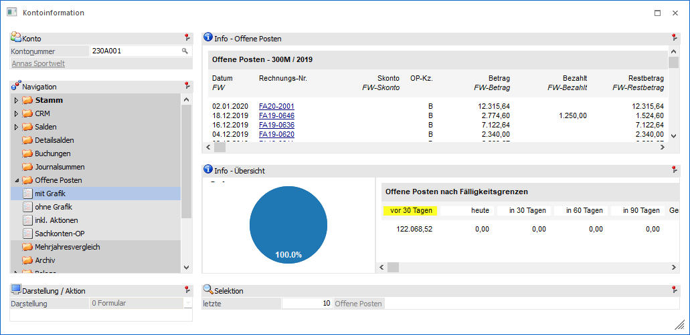
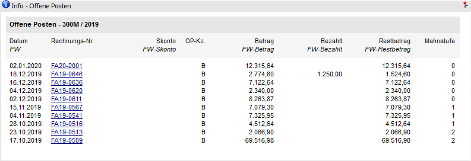
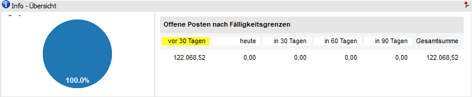

Kontoinformation - Bereich "Offene Posten" - Ansicht "mit Grafik"
In der Ansicht "mit Grafik" werden die OPs des Kontos dargestellt. Zusätzlich werden im unteren Bereich des Bildschirms eine Grafik und eine Textausgabe der Fälligkeitsgrenzen angezeigt.
Hinweis für Hauptmandanten
Wird ein Mandant ausgewertet zu welchem es auch Submandanten gibt, dann werden die OPs der einzelnen Mandanten der Reihe nach angezeigt und die Grafik zeigt die Summe der OPs aller Mandanten an (Hauptmandant und Submandanten).

Die Ansicht "mit Grafik" besteht aus den folgenden Info-Elementen:
ü Info -Offene Posten
ü Info - Übersicht
ü Selektion
Info - Offene Posten

An dieser Stelle werden die Offenen Posten, gemäß der nachfolgenden Selektion, dargestellt. Durch Anklicken der Rechnungsnummer wird die Belegvorschau geöffnet. Sollte die Rechnung in der Belegverwaltung nicht mehr gefunden (z.B. weil sie manuell gebucht oder durch den Reorg entfernt wurde), so wird die Suche nach dieser Rechnung im Archiv (sofern vorhanden) fortgesetzt.
Info - Übersicht

Hier werden Offene Posten nach Fälligkeitsgrenzen dargestellt.
Hinweis
Die 5 Fälligkeitsgrenzen werden im Programm Einstellungen - Konten (Bereich "Fälligkeit") definiert.
Selektion

Für die Darstellung der Anzeige steht folgender Punkt zur Verfügung, wobei die Einstellung für den Bereich "Offene Posten" übergreifend benutzerspezifisch gespeichert wird:
Ø letzte x Offene Posten
An dieser Stelle kann definiert werden, wie viele Offene Posten maximal angezeigt werden sollen.